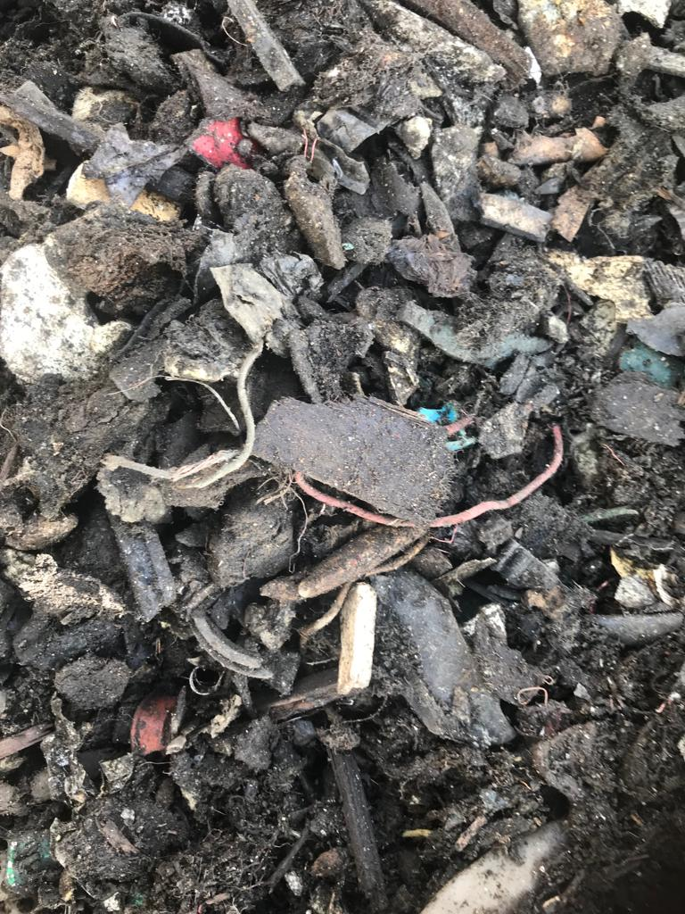

Det materiale som vi udvinder og genbruger kan komme mange steder fra. Alt fra gamle dåser til store fabriksmaskiner, som over tid er blevet for slidte. Man kan endda finde affald begravet under jorden, som førhen kunne have været blevet brugt til noget, som en skrue fra en traktor, som den tabte midt i høsten
Affaldet bliver sorteret før genanvendelse. Det gør man ved hjælp af roterende magneter, som er for enden af nogle ¨samlebånd¨. Der er kun nogle metaller som har magnetiske egenskaber. Disse er primært jern, nikkel og stål.
Derefter kommer affaldet igennem et shredder-anlæg. Som navnet antyder, er det en maskine som hakker affaldet i mindre stykker. Efter en sidste sortering hvor affaldet bliver opdelt efter materiale, bliver affaldet smeltet om, og derved har man nu rent råt materiale, som kan få nyt liv gennem genanvendelse.
Vi gør os umage med at få genbrugt så meget affald som muligt, men hvis vores planet skal blive renere, må vi alle gøre en indsats. Derfor har vi samlet nogle tips til jer derhjemme, til hvordan jeres hverdag kan blive mere miljøvenlig.
Det mest bæredygtige forbrug er det forbrug, som slet ikke finder sted. Når du er ude og handle efter dagligdagsvarer er det derfor en god idé at overveje hvorvidt man har brug for det man putter i kurven. Begræns dig selv til kun at handle ind til det, som I i jeres husstand kan nå at forbruge, før det bliver dårligt.
Når du er ude og handle er det også en god idé at købe økologiske fødevarer. På den måde slipper du som udgangspunkt for, at der er rester sprøjtemidler i din mad. Det er ikke kun frugt og grønt som blive produceret uden sprøjtemidler. Det samme gælder de planter, som bruges til foder for økologisk opdrættede dyr. Det er kun ganske få tilsætningsstoffer som er tilladte i økologiske fødevarer. Det betyder at du kan være med til mindske belastningen af naturen, fremme bedre dyrevelfærd og reducere dit og din families indtag af sprøjtemiddelrester.
Dertil er det også en god idé at vælge miljømærkede forbrugsvarer. Uanset hvilket produkt du vælger, kan du være sikker på, at hvis det er svanemærket eller har EU-blomsten på sig, så er produktet blandt de miljømæssigt bedste i deres kategori. Det kan du fordi de stiller høje krav til produkterne, og derfor bliver produkterne nøje fulgt, for at være sikker på, at processen skåner miljøet så meget som muligt.
Når du er ude og handle vil vi også anbefale at kigge efter Fairtrade-mærket. Fairtrade er en international mærkningsordning, som arbejder for at bønder og arbejdere i nogle af verdens fattigste lande kan få en mere fair indtægt, og bedre arbejdsvilkår.
Du kan også skåne miljøet og din pengepung, ved at købe ting brugt. Det kunne f.eks. være møbler, cykler, bøger og tøj. Gå til din nærmeste genbrugsbutik og kig dig omkring. Alternativt kan du også selv donere det du ikke længere kan bruge, som tøj du eller dine børn er vokset ud af, eller gammelt legetøj som ellers bare ligger og samler støv. Du kan også lave opslag på din lokale Facebook-side, hvor du kan sætte dine ting op til fri afhentning, hvis du gerne vil undgå at tage turen ned til en genbrugsforretning eller en station.
Du kan beholde krukker og flasker af glas, og bruge dem igen til at holde på noget andet. De kan blandt andet bruges til syltetøj/marmelade, hyldeblomstsaft eller stearinlys. Man kan også bruge dem som potter til planter, skulle man mangle nogle af dem.
Udover alle disse tips vil vi anbefale at følge den lokale affaldssortering som er opsat af din kommune. Sørg for at det skrald du har som du ikke kan genbruge kommer i de rigtige affaldscontainere, så det nemmere kan blive bearbejdet ude på affaldscentrerne.